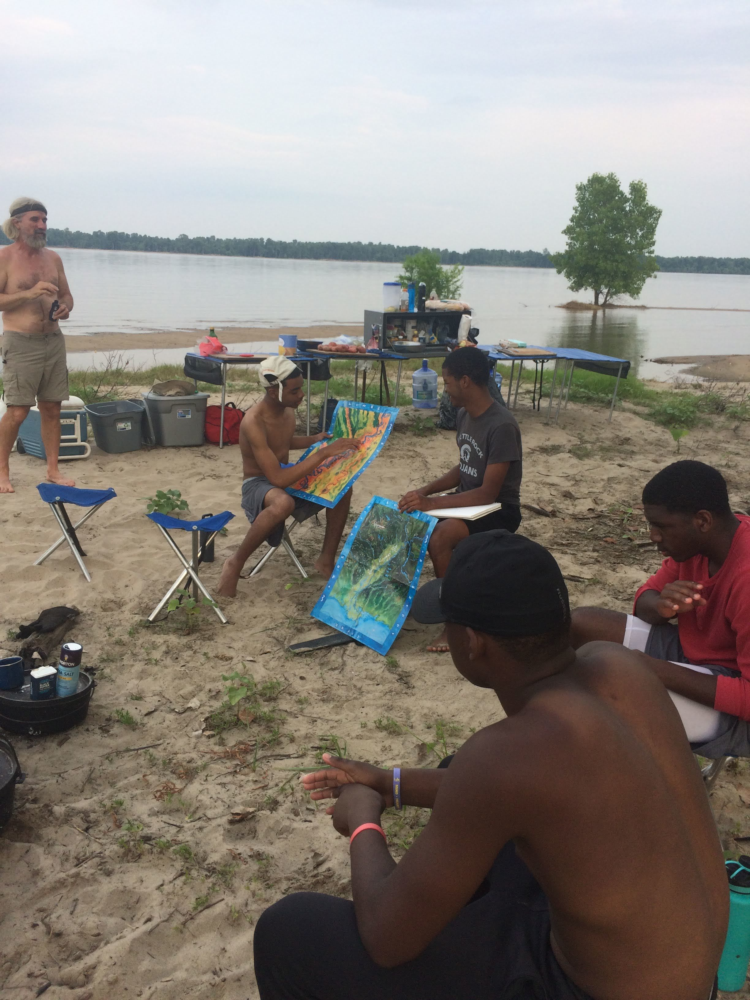
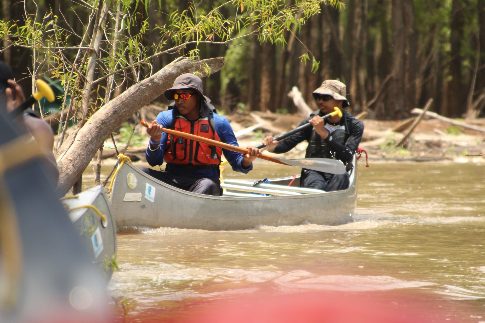
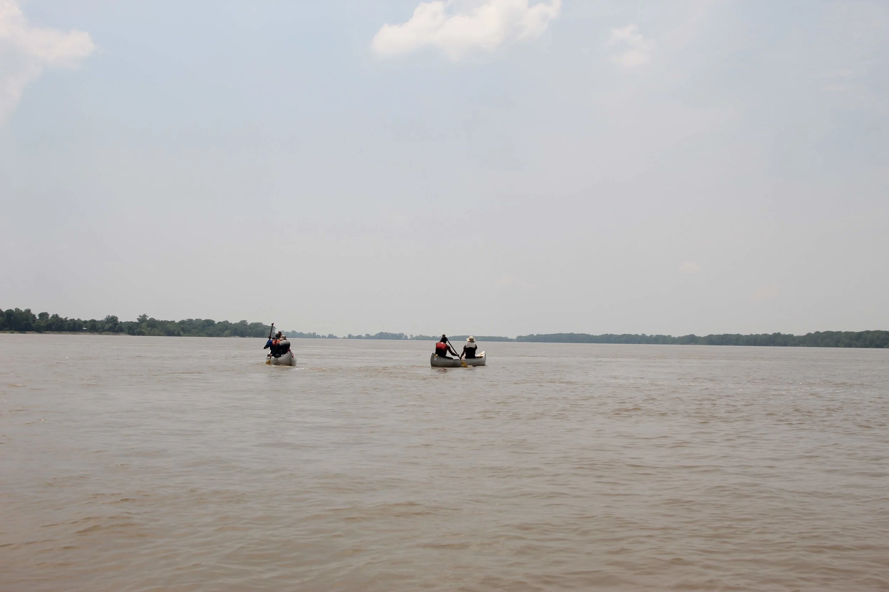
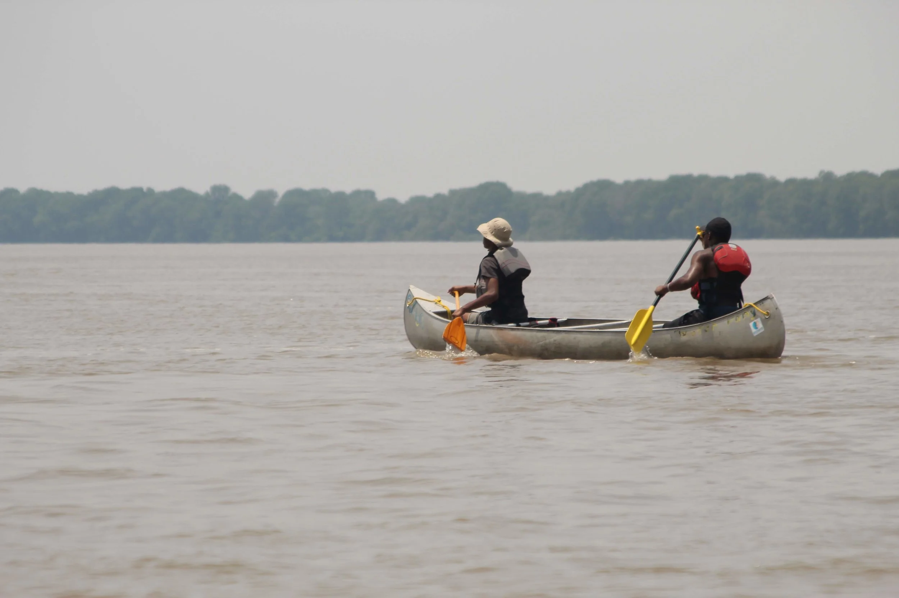
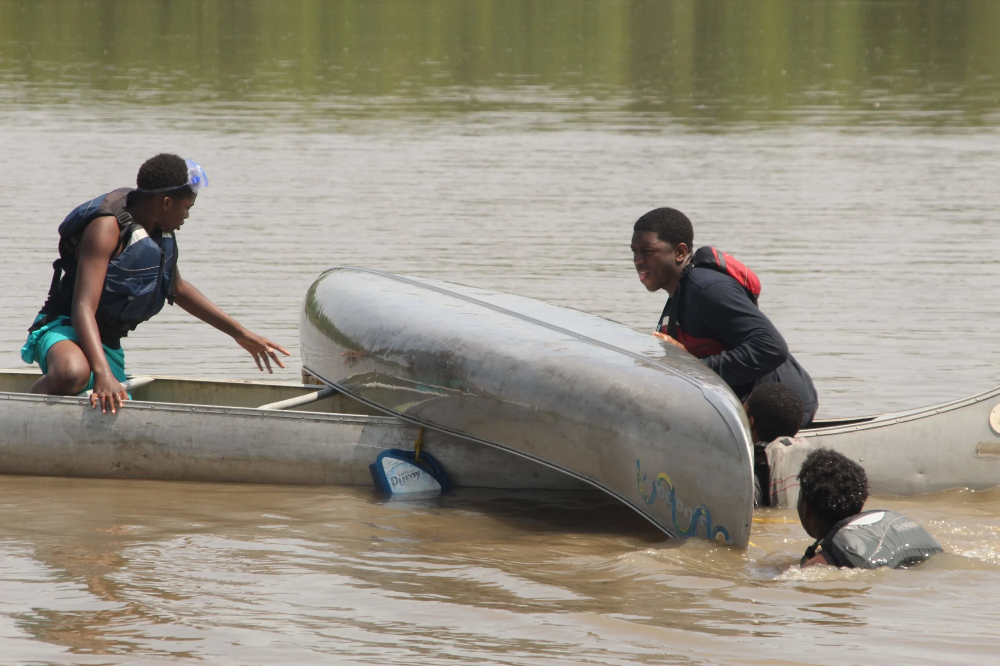

"THERE IS MORE TO BE LEARNED ON ONE DAY OF DISCOMFORT, POVERTY AND ANXIETY THAN IN A LIFETIME OF APPARENT HAPPINESS, SECURITY, RICHES AND POWER." - Anonymous
This year we added a level of challenge by allowing returning students to paddle the two-person canoes on their own. Last year we were all in the big boats and only used the small ones to practice canoe rescue skills.

Being in the back of a canoe is a real test of leadership. The person in the back is in charge and responsible for the safety of the person in the front. We knew some kids would rise to the challenge this year of taking on this role.

On Day 2 we found a quiet spot to allow returning students and new students to practice steering the small boats and how to rescue a capsized canoe. In the afternoon we had 4 students who felt confident take over the small boats on our way downstream. They were immediately put to the test when the wind picked up. The wind combined with the wake of a passing barge made for some challenging conditions. It required strong nerves and strong arms to keep the boat moving.


Over the fire that evening we talked about challenge and the role it plays in our lives. It can make us strong if we let it. Although we only covered about 10 miles on Day 2 everyone was feeling pretty drained from their challenges of the day.
